十一、色谱法(456题)
一、选择题 ( 共197题 )
1. 2 分 (1028)
物质 A 和 B 在长2m的柱上，保留时间为 16.40 min 和 17.63 min，不保留物质通过该柱的时间为 1.30 min，峰底宽度是 1.11 min 和 1.21 min，该柱的分离度为：( )
(1) 0.265 (2) 0.53 (3) 1.03 (4) 1.06
2. 2 分 (1029)
在液相色谱中，梯度洗脱最宜于分离 ( )
(1) 几何异构体 (2) 沸点相近，官能团相同的试样
(3) 沸点相差大的试样 (4) 分配比变化范围宽的试样
3. 2 分 (1030)
如果试样比较复杂，相邻两峰间距离太近或操作条件不易控制稳定，要准确测量保留值有一定困难时，宜采用的定性方法为 ( )
(1) 利用相对保留值定性 (2) 加入已知物增加峰高的办法定性
(3) 利用文献保留值数据定性 (4) 与化学方法配合进行定性
4. 2 分 (1031)
比保留体积的定义为:0℃时,单位质量固定液所具有的 ( )
(1)相对保留体积 (2)校正保留体积
(3)净保留体积 (4)调整保留体积
5. 2 分 (1032)
在法庭上，涉及到审定一种非法的药品，起诉表明该非法药品经气相色谱分析测得的保留时间在相同条件下，刚好与已知非法药品的保留时间相一致，而辨护证明有几个无毒的化合物与该非法药品具有相同的保留值，最宜采用的定性方法为 ( )
(1) 用加入已知物增加峰高的方法 (2) 利用相对保留值定性
(3) 用保留值双柱法定性 (4) 利用保留值定性
6. 2 分 (1033)
气相色谱分析时，第一次进样后得到 4 个组分峰，而第二次进样后变成 5 个组分峰，其原因可能是 ( )
(1) 进样量太多 (2) 记录纸走速太快
(3) 衰减不够 (4) 气化室温度太高
7. 2 分 (1034)
涉及色谱过程热力学和动力学两方面因素的是 ( )
(1) 保留值 (2) 分离度 (3) 相对保留值 (4) 峰面积
8. 2 分 (1035)
涉及色谱过程热力学和动力学两方面因素的是 ( )
(1) 保留值 (2) 分离度 (3) 理论塔板数 (4) 颗粒大小
9. 2 分 (1036)
在以下因素中，属热力学因素的是 ( )
(1) 分配系数 (2) 扩散速度 (3) 柱长 (4) 理论塔板数
10. 2 分 (1037)
在以下因素中，不属动力学因素的是 ( )
(1) 液膜厚度 (2) 分配系数 (3) 扩散速度 (4) 载体粒度
11. 2 分 (1038)
在液相色谱中，在以下条件中,提高柱效最有效的途径是 ( )
(1) 减小填料粒度 (2) 适当升高柱温
(3) 降低流动相的流速 (4) 降低流动相的粘度
12. 2 分 (1039)
在气相色谱法中，适于用氢火焰离子化检测器分析的组分是 ( )
(1) 二硫化碳 (2) 二氧化碳 (3) 甲烷 (4) 氨气
13. 2 分 (1040)
下列因素中,对色谱分离效率最有影响的是 ( )
(1) 柱温 (2) 载气的种类 (3) 柱压 (4) 固定液膜厚度
14. 2 分 (1041)
下列因素中,对气相色谱分离度影响最大的因素是 ( )
(1) 进样量 (2) 柱温 (3) 载体粒度 (4) 气化室温度
15. 2 分 (1042)
根据以下数据
─────┬───────┬────
物 质 │ tR- t0/min │ I
─────┼───────┼────
正己烷 │ 3.43 │ 600
─────┼───────┼────
苯 │ 4.72 │ ?
─────┼───────┼────
正庚烷 │ 6.96 │ 700
─────┴───────┴────
计算苯在 100℃的角鲨烷色谱柱上的保留指数是 ( )
(1) 531 (2) 645 (3) 731 (4) 745
16. 2 分 (1043)
分析甜菜萃取液中痕量的含氯农药宜采用 （ ）
(1) 热导池检测器 (2) 氢火焰离子化检测器
(3) 电子捕获检测器 (4) 火焰离子化检测器
17. 2 分 (1044)
测定有机溶剂中的微量水，下列四种检测器宜采用 ( )
(1) 热导池检测器 (2) 氢火焰离子化检测器
(3) 电子捕获检测器 (4) 火焰离子化检测器
18. 2 分 (1045)
将纯苯与组分 i 配成混合液，进行气相色谱分析，测得当纯苯注入量为 0.435mg时的峰面积为 4.00 cm2，组分 i 注入量为 0.653mg 时的峰面积为 6.50 cm2，当组分 i 以纯苯为标准时，相对定量校正因子是 ( )
(1) 2.44 (2) 1.08 (3) 0.924 (4) 0.462
19. 2 分 (1046)
使用热导池检测器时，为使检测器有较高的灵敏度，应选用的载气是 ( )
(1) N2 (2) H2 (3) Ar (4) N2－H2混合气
20. 2 分 (1047)
下列气相色谱操作条件，正确的是 ( )
(1) 载气的导热系数尽可能与被测组分的热导系数接近
(2) 使最难分离的物质对能很好分离的前提下，尽可能采用较高的柱温
(3) 载体的粒度愈细愈好
(4) 气化温度高好
21. 2 分 (1048)
镇静剂药的气相色谱图在 3.50min 时显示一个色谱峰，峰底宽度相当于 0.90min，在 1.5m 的色谱柱中理论塔板数是 ( )
(1) 62 (2) 124 (3) 242 (4) 484
22. 2 分 (1049)
气－液色谱中，对溶质的保留体积几乎没有影响的因素是 ( )
(1) 改变载气流速 (2) 增加柱温
(3) 改变固定液的化学性质 (4) 增加固定液的量，从 5% 到 10%
23. 2 分 (1050)
气－液色谱中，与二个溶质的分离度无关的因素是 ( )
(1) 增加柱长 (2) 改用更灵敏的检测器
(3) 改变固定液的化学性质 (4) 改变载气性质
24. 2 分 (1051)
若在一个 1m 长的色谱柱上测得两组分的分离度为 0.68，若要使它们完全分离，则柱长 (m) 至少应为 ( )
(1) 0.5 (2) 2 (3) 5 (4) 9
25. 2 分 (1052)
假如一个溶质的分配比为 0.1，它分配在色谱柱的流动相中的质量分数是 ( )
(1) 0.10 (2) 0.90 (3) 0.91 (4) 0.99
26. 2 分 (1053)
在色谱流出曲线上，两峰间距离决定于相应两组分在两相间的 ( )
(1) 载体粒度 (2) 分配系数 (3) 扩散速度 (4) 理论塔板数
27. 2 分 (1054)
气－液色谱中，保留值实际上反映下列那种物质分子间的相互作用力？( )
(1) 组分和载气 (2) 载气和固定液
(3) 组分和固定液 (4) 组分和载气、固定液
28. 1 分 (1055)
某组分在色谱柱中分配到固定相中的量为 mA(g),分配到流动相中的量为mB(g),而该组分在固定相中的质量浓度为ρA(g/mL),在流动相中的质量浓度为ρB(g/mL),则此组分的分配系数为 ( )
(1) mA/ mB (2) mA/ (mA+mB) (3) cA/ cB (4) cB/ cA
29. 2 分 (1057)
在其它色谱条件不变时，若使理论塔板数增加 3 倍，对两个十分接近峰的分离度是 ( )
(1) 增加 1 倍 (2) 增加 3 倍 (3) 增加 4 倍 (4) 增加 1.7 倍
30. 1 分 (1058)
使用气相色谱仪时，有下列步骤：
(1) 打开桥电流开关
(2) 打开记录仪开关
(3) 通载气
(4) 升箱柱温度及检测室温度
(5) 启动色谱仪开关
下面哪个次序是正确的？ ( )
(1) 1 → 2 → 3 → 4 → 5 (2) 2 → 3 → 4 → 5 → 1
(3) 3 → 5 → 4 → 1 → 2 (4) 5 → 1 → 4 → 3 → 2
31. 2 分 (1059)
应用新的热导池检测器后，发现噪音水平是老的检测器的一半，而灵敏度加倍，与老的检测器相比，应用新的检测器后使某一有机物的检测限是 ( )
(1) 减少为原来的 1/4 (2) 减少为原来的 1/2
(3) 基本不变 (4) 增加原来的 1/4
32. 2 分 (1060)
在气相色谱法中，调整保留值实际上反映了下列那种物质的分子间的相互作用？( )
(1) 组分与载气 (2) 组分与固定相 (3) 组分与组分 (4) 载气与固定相
33. 2 分 (1061)
在色谱法中，任何组分的分配系数都比1小的是 ( )
(1) 气-固色谱 (2) 气-液色谱 (3) 空间排阻色谱 (4) 离子交换色谱
34. 2 分 (1062)
相对保留值 a ( )
(1) 与柱温无关 (2) 与所用固定相有关
(3) 同气化温度有关 (4) 与柱填充状况及流速有关
35. 2 分 (1063)
在气相色谱仪中,采用双柱双气路的主要目的是 ( )
(1) 专门为热导池检测器设计 (2) 专门为程序升温而设计
(3) 专门为比较流动相速度而设计 (4) 专门为控制压力而设计
36. 2 分 (1064)
根据范弟姆特方程式，在高流速情况下，影响柱效的因素主要是 ( )
(1) 传质阻力 (2) 纵向扩散 (3) 涡流扩散 (4) 柱弯曲因子
37. 2 分 (1065)
分离有机胺时，最好选用的色谱柱为 ( )
(1) 非极性固定液柱 (2) 低沸点固定液柱
(3) 空间排阻色谱柱 (4) 氢键型固定液柱
38. 2 分 (1066)
在气相色谱中，实验室之间最能通用的定性参数是 ( )
(1) 保留指数 (2) 调整保留体积 (3) 保留体积 (4) 相对保留值
39. 5 分 (1067)
为了测定热导池检测器的灵敏度，注入 0.5mL 苯进入色谱仪，记录纸速度为 5mm/min，苯的峰高为 2.5mV，半峰宽为 2.5mm，柱出口处载气流量为 30mL/min，忽略温度与压力的校正,（苯的相对密度为 0.88）则热导池检测器灵敏度为 ( )
(1) 85 mV・mL/mg (2) 85×10-3 mV・mL/g
(3) 170 mV・mL/mg (4) 17 mV・mL/g
40. 2 分 (1108)
一般气相色谱法适用于 ( )
(1) 任何气体的测定
(2) 任何有机和无机化合物的分离、测定
(3) 无腐蚀性气体与在气化温度下可以气化的液体的分离与测定
(4) 任何无腐蚀性气体与易挥发的液体、固体的分离与鉴定
41. 2 分 (1109)
为测定某组分的保留指数，气相色谱法一般采取的基准物是： ( )
(1) 苯 (2) 正庚烷 (3) 正构烷烃 (4) 正丁烷和丁二烯
42. 2 分 (1110)
采用气相色谱氢火焰离子化检测器时，与相对校正因子有关的因素是 ( )
(1) 固定液的极性 (2) 载气的种类 (3) 载气的流速 (4) 标准物的选用
43. 2 分 (1177)
在色谱分析中通常可通过下列何种方式来提高理论塔板数？ ( )
(1) 加长色谱柱 (2) 在高流速区操作
(3) 增大色谱柱的直径 (4) 进样量增加
44. 2 分 (1185)
对于一对较难分离的组分现分离不理想，为了提高它们的色谱分离效率，最好采用的措施为 ( )
(1) 改变载气速度 (2) 改变固定液
(3) 改变载体 (4) 改变载气性质
45. 2 分 (1207)
在高固定液含量色谱柱的情况下，为了使柱效能提高，可选用 ( )
(1) 适当提高柱温 (2) 增加固定液含量
(3) 增大载体颗粒直径 (4) 增加柱长
46. 2 分 (1211)
在色谱分析中，柱长从 1m 增加到 4m ，其它条件不变，则分离度增加 ( )
(1) 4 倍 (2) 1 倍 (3) 2 倍 (4) 10 倍
47. 2 分 (1212)
在色谱定量分析中，若 A 组分的相对质量校正因子为 1.20，就可以推算出它的相对质量灵敏度为： ( )
(1) 2 × 1.20 (2) 0.833
(3) 1.20×A 的相对分子质量 (4) 1.20÷A 的相对分子质量
48. 2 分 (1213)
在柱温一定时，要使相对保留值增加，可以采取 ( )
(1) 更细的载体 (2) 最佳线速
(3) 高选择性固定相 (4) 增加柱长
49. 2 分 (1214)
欲使色谱峰宽减小，可以采取 ( )
(1) 降低柱温 (2) 减少固定液含量
(3) 增加柱长 (4) 增加载体粒度
50. 2 分 (1215)
在气相色谱分析中，要使分配比增加，可以采取 ( )
(1) 增加柱长 (2) 减小流动相速度
(3) 降低柱温 (4) 增加柱温
51. 2 分 (1390)
气相色谱的分离原理是利用不同组分在两相间具有不同的 ( )
(1)保留值 (2)柱效 (3)分配系数 (4)分离度
52. 2 分 (1391)
在液相色谱中, 为了提高分离效率, 缩短分析时间, 应采用的装置是 ( )
(1)高压泵 (2)梯度淋洗 (3)贮液器 (4)加温
53. 2 分 (1392)
经典填充柱, 在固定液含量较高, 中等线速时, 塔板高度的主要控制因素是( )
(1)涡流扩散项 (2)分子扩散项 (3)气相传质阻力项 (4)液相传质阻力项
54. 2 分 (1393)
欲使流速分布比较均匀, 柱效也较高, 应控制柱前压力与出口压力的比值(p1/p0)为( )
(1)1 (2)1.5 (3)2 (4)4
55. 1 分 (1394)
目前人们公认的色谱法的创始人是 ( )
(1)法拉第 (2)海洛夫斯基 (3)瓦尔士 (4)茨维特
56. 1 分 (1395)
1941年建立了液-液分配色谱法, 对气相色谱法发展做出了杰出贡献, 因此于1952年荣
获诺贝尔化学奖的科学家是 ( )
(1)茨维特 (2)康斯登马丁 (3)范特姆特 (4)马丁和辛格
57. 2 分 (1396)
色谱法作为分析方法之一, 其最大的特点是 ( )
(1)分离有机化合物 (2)依据保留值作定性分析
(3)分离与分析兼有 (4)依据峰面积作定量分析
58. 2 分 (1397)
在气-液色谱法中, 首先流出色谱柱的组分是 ( )
(1)吸附能力小 (2)吸附能力大
(3)溶解能力大 (4)溶解能力小
59. 2 分 (1398)
色谱柱的长度一定时, 色谱峰的宽度主要取决于组分在柱中的 ( )
(1)分配系数K (2)分子扩散速度
(3)分子扩散和传质速率 (4)保留值
60. 2 分 (1399)
采用极性固定液制成色谱柱, 用于分离极性组分时, 分子间作用力主要是( )
(1)色散力 (2)诱导力 (3)库仑力( 定向力 ) (4)色散力和诱导力
61. 2 分 (1400)
非极性的色谱柱, 用于分离非极性组分时, 分子间作用力主要是 ( )
(1)库仑力 (2)诱导力 (3)色散力 (4)化学键
62. 2 分 (1401)
用极性色谱柱分离非极性组分时, 分子间作用力主要是 ( )
(1)诱导力 (2)色散力 (3)氢键力 (4)定向力
63. 2 分 (1402)
气-液色谱柱的老化处理的目的是 ( )
(1)去活性 (2)除去表面吸附的水分
(3)活化 (4)除去残余的溶剂和其它易挥发杂质
64. 2 分 (1403)
下列条件中对气相色谱柱分离度影响最大的因素是 ( )
(1)载气种类 (2)载气的流速
(3)色谱柱的载体性质 (4)色谱柱柱温
65. 2 分 (1404)
在GC和LC中, 影响柱选择性的不同的因素是 ( )
(1)固定相的种类 (2)柱温 (3)流动相的种类 (4)分配比
66. 2 分 (1405)
在GC分析中, 使被测物质保留时间缩短的措施是 ( )
(1)增大载气的相对分子质量 (2)升高柱温
(3)理论塔板数增加 (4)增加固定液的用量
67. 2 分 (1406)
应用GC法定量分析试样中各组分含量时, 它们之间的分离度至少应为 ( )
(1)0.50 (2)0.75 (3)1.0 (4)1.5
68. 2 分 (1407)
在色谱流出曲线上, 两峰间距离决定于相应两组分在两相间的 ( )
(1)保留值 (2)分配系数 (3)扩散速度 (4)传质速率
69. 1 分 (1408)
由俄国植物学家茨维特创立的色谱法, 应该是属于 ( )
(1)气-液色谱 (2)气-固色谱 (3)液-液色谱 (4)液-固色谱
70. 2 分 (1409)
浓度型检测器, 其响应值是正比于 ( )
(1)载气中组分的浓度 (2)单位时间进入检测器的质量
(3)固定相中组分的质量 (4)单位时间进入检测器的浓度
71. 2 分 (1410)
在GC中, 保留值实际上所反映的分子间相互作用力是 ( )
(1)组分和载气 (2)载气和固定液
(3)组分和组分 (4)组分和固定液
72. 2 分 (1411)
应用GC方法来测定痕量硝基化合物, 宜选用的检测器为 ( )
(1)热导池检测器 (2)氢火焰离子化检测器
(3)电子捕获检测器 (4)火焰光度检测器
73. 2 分 (1412)
应用GC法来检测啤酒中微量硫化物的含量, 宜选用的检测器为 ( )
(1)热导池检测器 (2)氢火焰离子化检测器
(3)电子捕获检测器 (4)火焰光度检测器
74. 2 分 (1413)
在GC分析中, 两个组分之间的分离度不受下列哪个因素的影响？ ( )
(1)增加柱长 (2)使用更灵敏的检测器
(3)进样速度较慢 (4)改变固定液的性质
75. 2 分 (1414)
在GC法中, 组分与载体间发生相互作用, 结果常会导致 ( )
(1)峰变窄 (2)涡流扩散作用增大
(3)产生拖尾峰 (4)检测器灵敏度降低
76. 2 分 (1415)
相对响应值s'或校正因子f'与下列哪个因素无关？ ( )
(1)基准物 (2)检测器类型
(3)被测试样 (4)载气流速
77. 2 分 (1416)
如果试样中各组分无法全部出峰或只要定量测定试样中某几个组分, 那么应采用下列定量分析方法中哪一种为宜？ ( )
(1)归一化法 (2)外标法 (3)内标法 (4)标准工作曲线法
78. 2 分 (1417)
下列几个检测器中那一个是作为高效液相色谱中的通用型的浓度检测器 ( )
(1)紫外可见光度检测器 (2)热导池检测器
(3)荧光检测器 (4)示差折光检测器
79. 2 分 (1418)
利用气相色谱法来测定某有机混合物, 已知各组分在色谱条件下均可出峰, 那么定量分析各组分含量时应采用 ( )
(1)外标法 (2)内标法 (3)归一化法 (4)工作曲线法
80. 2 分 (1419)
如果试样比较复杂,相邻两峰间距离太近或操作条件不易控制稳定, 要准确测量保留值有一定困难时, 应采用下列哪种方法定性？ ( )
(1)内标法 (2)加入已知物增加峰高
(3)利用文献保留数据 (4)利用检测器的选择性
81. 2 分 (1420)
检测器的响应时间是进入检测器的某一组分的输出信号 ( )
(1)达到最高柱效所需的时间 (2)达到最大值所需的时间
(3)达到其真值50%所需的时间 (4)达到其真值63%所需的时间
82. 2 分 (1421)
在LC中, 提高色谱柱的柱效率最有效的途径是 ( )
(1)减小载体粒度 (2)适当升高柱温
(3)降低流动相的速度 (4)降低流动相的粘度
83. 2 分 (1422)
在GC中, 程序升温适用于分离 ( )
(1)几何异构体 (2)沸点不同官能团相同的试样
(3)沸点相近官能团相似的试样 (4)沸点范围很宽的复杂试样
84. 2 分 (1423)
理论塔板数反映了 ( )
(1)分离度 (2)分配系数 (3)保留值 (4)柱的效能
85. 2 分 (1424)
气相色谱法能分析性质极为相近的物质如同位素、烃类异构体等. 这是由于该方法具有 ( )
(1)高灵敏度 (2)高柱效 (3)速度高 (4)分析高选择性,高柱效
86. 2 分 (1425)
检测器的"线性"范围是指 ( )
(1)标准曲线是直线部分的范围
(2)检测器响应呈线性时最大和最小进样量之比
(3)检测器响应呈线性时最大和最小进样量之差
(4)最大允许进样量与最小检测量之差
87. 2 分 (1426)
气相色谱中, 用静电力、诱导力、色散力、氢键作用力四种力来说明 ( )
(1)被测分子间的作用力
(2)被测分子与流动相分子间的作用力
(3)被测分子与固定液分子间的作用力
(4)流动相分子与固定液分子间的作用力
88. 2 分 (1427)
GC的分离原理是基于分配系数K 的大小, 对于气-固色谱法而言, 各组分之间的分离是依据于 ( )
(1)溶解能力大小 (2)沸点的高低
(3)熔点的高低 (4)吸附能力大小
89. 2 分 (1428)
空心毛细管柱的涡流扩散项等于 ( )
(1)A (2)2ldp (3)B/u (4)0
90. 2 分 (1429)
当载气线速越小, 范式方程中, 分子扩散项B越大, 所以应选下列气体中哪一种作载气最有利？ ( )
(1)H2 (2)He (3)Ar (4)N2
91. 2 分 (1430)
使用氢火焰离子化检测器, 选用下列哪种气体作载气最合适？ ( )
(1)H2 (2)He (3)Ar (4)N2
92. 2 分 (1431)
使用热导池检测器时, 应选用下列哪种气体作载气, 其效果最好？ ( )
(1)H2 (2)He (3)Ar (4)N2
93. 2 分 (1432)
在下列气体中不能用作气相色谱载气的是 ( )
(1)H2 (2)O2 (3)N2 (4)Ar
94. 1 分 (1433)
超临界流体色谱常用的流动相是 ( )
(1)氢气 (2)二氧化碳 (3)一氧化碳 (4)氧气
95. 2 分 (1434)
在液相色谱中, 某组分的保留值大小实际反映了哪些部分的分子间作用力？（ ）
(1)组分与流动相 (2)组分与固定相
(3)组分与流动相和固定相 (4)组分与组分
96. 2 分 (1435)
程序升温气相色谱采用双柱双气路的作用是 ( )
(1)使基线漂移得到补偿 (2)使色谱柱加热均匀
(3)防止固定液流失 (4)使载气流量稳定
97. 2 分 (1436)
两组分在同一固定相上分离的可能性与哪个因素无关？ ( )
(1)检测器灵敏度的高低 (2)选择性的大小
(3)分配次数的多少 (4)分配系数之差的大小
98. 2 分 (1437)
在液相色谱中, 通用型检测器是 ( )
(1)示差折光检测器 (2)极谱检测器
(3)荧光检测器 (4)电化学检测器
99. 1 分 (1438)
用比移值(Rf)来衡量各组分相互分离情况的方法是 ( )
(1)薄层色谱 (2)化学键合相色谱
(3)离子交换色谱 (4)空间排阻色谱
100. 1 分 (1439)
在液相色谱中, 为了获得较高柱效能, 常用的色谱柱是 ( )
(1)直形填充柱 (2)毛细管柱
(3)Ｕ形柱 (4)螺旋形柱
101. 1 分 (1440)
纸色谱的分离原理, 与下列哪种方法相似？ ( )
(1)毛细管扩散作用 (2)萃取分离 (3)液-液离子交换 (4)液-固吸附
102. 2 分 (1441)
在液相色谱中, 用紫外吸收检测器时, 选用下列哪种溶剂作流动相最合适（ ）
(1)在波长190nm以下有吸收峰 (2)在波长为254nm处有吸收峰
(3)在波长为365nm处有吸收峰 (4)在波长为190nm以上有吸收峰
103. 2 分 (1442)
在液相色谱中, 下列哪种检测器不能用于梯度洗脱？ ( )
(1)电化学检测器 (2)荧光检测器
(3)示差折光检测器 (4)紫外吸收检测器
104. 2 分 (1445)
组分与固定液分子之间的作用力主要有 ( )
(1)静电力和诱导力 (2)色散力
(3)氢键力 (4) (1),(2)和(3)
105. 2 分 (1446)
热导池检测器是一种 ( )
(1)浓度型检测器
(2)质量型检测器
(3)只对含碳、氢的有机化合物有响应的检测器
(4)只对含硫、磷化合物有响应的检测器
106. 2 分 (1447)
色谱体系的最小检测量是指恰能产生与噪声相鉴别的信号时 ( )
(1)进入单独一个检测器的最小物质量
(2)进入色谱柱的最小物质量
(3)组分在气相中的最小物质量
(4)组分在液相中的最小物质量
107. 2 分 (1448)
与质量型检测器灵敏度有关的参数为 ( )
(1) 记录仪的有关参数 (2) 色谱流出曲线面积
(3) 进样量 (4) (1)、(2)和(3)
108. 2 分 (1449)
与浓度型检测器的灵敏度有关的参数为 ( )
(1) 记录仪的有关参数 (2) 色谱流出曲线面积
(3) 进样量与载气流速 (4) (1)、(2)和(3)
109. 2 分 (1450)
硅藻土型载体, 常用的处理方法有 ( )
(1)酸洗 (2)碱洗 (3)硅烷化 (4) (1)、(2)和(3)
110. 2 分 (1451)
硅藻土型载体, 使用前处理的目的是 ( )
(1)增大表面积 (2)使粒度细小、均匀
(3)除去表面吸附中心和催化中心 (4)增加机械强度和热稳定性
111. 2 分 (1452)
良好的气-液色谱固定液为 ( )
(1)蒸气压低、稳定性好
(2)化学性质稳定
(3)溶解度大, 对相邻两组分有一定的分离能力
(4) (1)、(2)和(3)
112. 2 分 (1453)
在气-液色谱分析中, 良好的载体为 ( )
(1)粒度适宜、均匀, 表面积大
(2)表面没有吸附中心和催化中心
(3)化学惰性、热稳定性好, 有一定的机械强度
(4) (1)、(2)和(3)
113. 2 分 (1454)
速率理论常用于 ( )
(1)塔板数计算
(2)塔板高度计算
(3)色谱流出曲线形状的解释
(4)解释色谱流出曲线的宽度与哪些因素有关
114. 2 分 (1455)
塔板理论不能用于 ( )
(1)塔板数计算
(2)塔板高度计算
(3)解释色谱流出曲线的形状
(4)解释色谱流出曲线的宽度与哪些因素有关
115. 2 分 (1456)
在气-液色谱分析中, 色谱柱中的固定相为 ( )
(1)一般固体物质 (2)固体吸附剂 (3)载体 (4)载体+固定液
116. 2 分 (1457)
在气-固色谱分析中, 色谱柱内装入的固定相为 ( )
(1)一般固体物质 (2)载体 (3)载体+固定液 (4)固体吸附剂
117. 2 分 (1458)
在气相色谱分析中, 相邻两组分的分离度与下列哪些参数无关? ( )
(1)塔板高度 (2)塔板数 (3)固定相量 (4)检测器灵敏度
118. 2 分 (1459)
在气相色谱分析中, 色谱流出曲线的宽度与色谱过程的哪些因素无关? ( )
(1)热力学因素 (2)色谱柱长度
(3)动力学因素 (4)热力学和动力学因素
119. 2 分 (1460)
在气相色谱分析中, 相邻两组分的分离度与下述哪些参数有关？ （ ）
(1)保留指数 (2) 相邻两组分保留值之差
(3)相邻两组分峰底宽之和 (4) (2)和(3)
120. 2 分 (1461)
在气相色谱分析中, 用于定性分析的参数是 ( )
(1)保留值 (2)峰面积 (3)分离度 (4)半峰宽
121. 2 分 (1462)
在气相色谱分析中, 用于定量分析的参数是 ( )
(1)保留时间 (2)保留体积 (3)半峰宽 (4)峰面积
122. 2 分 (1463)
在气-液色谱分析中, 正确的说法是 ( )
(1)柱温只影响组分的气化与冷凝
(2)柱温只影响动力学因素
(3)柱温只影响热力学因素
(4)柱温影响动力学因素和热力学因素
123. 2 分 (1464)
在气-液色谱分析中, 组分与固定相间的相互作用主要表现为下述哪种过程?（ ）
(1)吸附-脱附 (2)溶解-挥发 (3)离子交换 (4)空间排阻
124. 2 分 (1465)
对于具有宽沸程组分的试样, 为了保证分离度和缩短分析时间, 色谱柱柱温的升温速度应采用 ( )
(1)快速升温 (2)慢速升温 (3)程序升温 (4)控制在某一固定温度
125. 2 分 (1466)
当载气流速远小于最佳流速时, 为了提高柱效, 合适的载气为 ( )
(1)摩尔质量大的气体 (2)摩尔质量小的气体
(3)中等摩尔质量的气体 (4)任何气体均可
126. 2 分 (1467)
当载气流速远大于最佳流速时, 为了提高柱效, 合适的载气为 ( )
(1)摩尔质量大的气体 (2)摩尔质量小的气体
(3)中等摩尔质量的气体 (4)任何气体均可
127. 2 分 (1468)
当载气流速u处于最佳流速时, 则u与哪些因素有关 ( )
(1) A与C (2) B与A (3) B与C (4) A、B与C
128. 2 分 (1469)
分配比是指在一定温度、压力下, 组分在气─液两相间达到分配平衡时,（ ）
(1)分配在液相中的质量与分配在气相中的质量之比
(2)组分在液相中与组分在流动相中的浓度比
(3)气相所占据的体积与液相所占据的体积比
(4)组分在气相中的停留时间与组分在液相中的停留时间之比
129. 2 分 (1470)
气相色谱-质谱联用分析中, 常用的载气是 ( )
(1)He (2)N2 (3)Ar (4)CO2
130. 2 分 (1471)
在气相色谱中, 毛细管柱的最小板高是 ( )
(1)2（C／B）1/2 (2)2（B／C）1/2 (3)2（BC）1/2 (4)A＋2（BC）1/2
131. 2 分 (1472)
分析挥发性宽沸程试样时, 采用下列哪种方法？ ( )
(1)离子交换色谱法 (2)空间排阻色谱法
(3)梯度洗脱液相色谱法 (4)程序升温气相色谱法
132. 2 分 (1473)
分析相对分子质量大于2000的试样, 一般采用的方法是 ( )
(1)空间排阻色谱法 (2)毛细管柱气相色谱法
(3)填充柱气相色谱法 (4)离子交换色谱法
133. 2 分 (1474)
欲使分配比减小, 采用的方法是 ( )
(1)减小流动相速度 (2)增加固定相量
(3)增加柱温 (4)增加柱长
134. 2 分 (1475)
用超临界流体色谱分析分配比变化范围宽的复杂试样时, 采用下列哪种方法？（ ）
(1)程序升温 (2)程序升压 (3)梯度洗脱 (4)混合固定相
135. 2 分 (1476)
当进样量一定时, 测得某检测器的峰高在一定范围内与载气的流速呈正比, 而峰面积与流速无关, 这种检测器是 ( )
(1)质量型检测器 (2)浓度型检测器
(3)热导池检测器 (4)电子捕获检测器
136. 2 分 (1477)
在一定的柱温下, 下列哪个参数的变化不会使比保留体积(Vg)发生改变？（ ）
(1)改变检测器性质 (2)改变固定液种类
(3)改变固定液用量 (4)增加载气流速
137. 2 分 (1478)
用色谱法对复杂未知物进行定性分析的最有效方法是 ( )
(1)利用检测器的选择性定性 (2)利用已知物对照法定性
(3)利用文献保留数据定性 (4)利用色谱-质谱联用定性
138. 2 分 (1479)
根据分离原理, 指出纸色谱是属于哪种分离方法？ ( )
(1)液-液分配 (2)液-固吸附 (3)离子交换 (4)毛细管扩散
139. 2 分 (1480)
在液相色谱中, 空间排阻色谱的分离机理是根据被测组分在多孔凝胶中对孔的（ ）
(1)渗透或被孔的排斥不同而分离的
(2)离子交换或亲合能力不同而分离的
(3)吸附或被孔的解吸不同而分离的
(4)毛细管扩散或被孔溶解不同而分离的
140. 2 分 (1481)
用离子交换色谱分析阳离子时, 保留时间的顺序为 ( )
(1)Ｎａ+＞Ｃａ2+＞Ｃｅ3+＞Ｔｈ4+
(2)Ｔｈ4+＞Ｃｅ3+＞Ｃａ2+＞Ｎａ+
(3)Ｔｈ4+＞Ｃａ2+＞Ｃｅ3+＞Ｎａ+
(4)Ｃｅ3+＞Ｃａ2+＞Ｎａ+＞Ｔｈ4+
141. 2 分 (1482)
用离子交换色谱分析阴离子时, 保留时间的顺序为 ( )
(1)F- ＞Cl-＞NO3-＞SO42- (2)SO42-＞NO3-＞Cl-＞F-
(3) Cl-＞F-＞SO42-＞ＮO3- (4) NO3-＞F-＞ Cl-＞SO42-
142. 2 分 (1483)
利用峰高乘半峰宽法来测量色谱峰面积的绝对值, 其计算公式应是 ( )
(1) h×W�� (2) 0.939h×W��
(3)（1／0.939）h×W�� (4)（1／2）h×W��
143. 2 分 (1484)
标准偏差s与峰底宽度W之间关系式为 ( )
(1)Wb＝2�� (2)Wb＝4��
(3)Wb＝（21/2）×2s�� (4)W＝（21/2／2）s��
144. 2 分 (1485)
在液-固色谱法中, 以硅胶为固定相, 对以下四组分, 最后流出色谱柱的组分可能是 ( )
(1)苯酚 (2)苯胺 (3)邻羟基苯胺 (4)对羟基苯胺
145. 2 分 (1486)
下列诸式中哪一个式子不能用来表示相对保留值��a2,1 ？ ( )
(1) t'(2) /t'(1) (2) V'(2) /V'(1) (3) k'(2) /k'(1) (4) t(2)/ t(1)
146. 2 分 (1488)
下列式子中哪一个式子不能用来计算色谱柱的理论塔板数？ ( )
(1) (tR /s)2 (2) 16(tR/Wb)2 (3) 5.54(t'R/W1/2)2 (4) 16(t'R/Wb)2[(k+1)/k]2
147. 2 分 (1491)
当进样量一定时, 测得某检测器的峰高在一定范围内与载气的流速无关, 而峰面积则与流速成反比, 这种检测器是 ( )
(1)质量型检测器 (2)浓度型检测器
(3)氢火焰离子化检测器 (4)火焰光度检测器
148. 2 分 (1630)
试指出下列说法中, 哪一个不正确? 气相色谱法常用的载气是 ( )
(1) 氢气 (2) 氮气 (3) 氧气 (4) 氦气
149. 2 分 (1631)
俄国植物学家茨维特在研究植物色素成分时, 所采用的色谱方法是 ( )
(1) 液-液色谱法 (2) 液-固色谱法
(3) 空间排阻色谱法 (4) 离子交换色谱法
150. 2 分 (1632)
当用硅胶-十八烷为固定相, 甲醇和水(75:25)为流动相, 对下列哪一种化合物时, 保留时间最长? ( )
(1) 苯 (2) 甲苯 (3) 萘 (4) 蒽
151. 2 分 (1633)
试指出下述哪个条件的改变会引起分配系数的变化? ( )
(1) 缩短柱长 (2) 改变固定相
(3) 加大载气流速 (4) 加大液膜厚度
152. 2 分 (1634)
色谱图上两峰间的距离的大小, 与哪个因素无关? ( )
(1) 极性差异 (2) 沸点差异 (3) 热力学性质差异 (4) 动力学性质差异
153. 2 分 (1635)
在气-液色谱中, 若用热导池检测器检测时, 宜用下述哪种物质测定死时间?( )
(1) 空气 (2) 甲烷 (3) 苯 (4) 庚烷
154. 2 分 (1636)
在气-液色谱中, 若用氢火焰离子化检测器检测时, 宜用下述哪种物质测定死时间? ( )
(1) 空气 (2) 甲烷 (3) 苯 (4) 乙醇
155. 2 分 (1637)
若测定空气中N2和O2的含量, 宜采用下述哪一种分离方法? ( )
(1) 气-液色谱法 (2) 气-固色谱法
(3) 液-液色谱法 (4) 空间排阻色谱法
156. 2 分 (1638)
在气-液色谱中, 色谱柱使用的上限温度取决于 ( )
(1) 试样中沸点最高组分的沸点 (2) 试样中各组分沸点的平均值
(3) 固定液的沸点 (4) 固定液的最高使用温度
157. 2 分 (1639)
对聚苯乙烯相对分子质量进行分级分析, 应采用下述哪一种色谱方法? ( )
(1) 离子交换色谱法 (2) 液-固色谱法
(3) 空间排阻色谱法 (4) 液-液色谱法
158. 2 分 (1640)
在液相色谱中, 范氏方程中的哪一项对柱效能的影响可以忽略不计? ( )
(1) 涡流扩散项 (2) 分子扩散项
(3) 固定相传质阻力项 (4) 流动相中的传质阻力
159. 2 分 (1641)
试指出下述说法中, 哪一种是错误的? ( )
(1) 根据色谱峰的保留时间可以进行定性分析
(2) 根据色谱峰的面积可以进行定量分析
(3) 色谱图上峰的个数一定等于试样中的组分数
(4) 色谱峰的区域宽度体现了组分在柱中的运动情况
60. 2 分 (1642)
在气相色谱法中, 适于用氢火焰离子化检测器分析的组分是 ( )
(1) CS2 (2) CO2 (3) CH4 (4) NH3
161. 2 分 (1643)
在气相色谱分析中, 为了测定农作物中含硫农药的残留量, 应选用下述哪种检测器? ( )
(1) 热导池 (2) 氢火焰离子化 (3) 电子捕获 (4) 火焰光度
162. 2 分 (1644)
在气相色谱分析中, 为了测定酒中水的含量, 应选用下述哪种检测器? ( )
(1) 热导池 (2) 氢火焰离子化 (3) 电子捕获 (4) 火焰光度
163. 2 分 (1645)
在气相色谱分析中, 为了测定微量含磷农药的含量, 最合适的检测器为( )
(1) 热导池 (2) 氢火焰离子化 (3) 电子捕获 (4) 火焰光度
164. 2 分 (1646)
在气-液色谱分析中, 当两组分的保留值很接近, 且峰很窄, 其原因是( )
(1) 柱效能太低 (2) 容量因子太大
(3) 柱子太长 (4) 固定相选择性不好
165. 2 分 (1647)
用液相色谱法分离长链饱和烷烃的混合物, 应采用下述哪一种检测器?( )
(1) 紫外吸收检测器 (2) 示差折光检测器
(3) 荧光检测器 (4) 电化学检测器
166. 2 分 (1648)
在环境保护中, 常常要监测水源中的多环芳烃, 宜采用下述哪种检测器?( )
(1) 电子捕获检测器 (2) 示差折光检测器
(3) 荧光检测器 (4) 电化学检测器
167. 2 分 (1649)
当载气线速较小, 范氏方程中的分子扩散项起控制作用时, 采用下列哪一种气体作载气
对提高柱效有利? ( )
(1) 氢气 (2) 氮气 (3) 氧气 (4) 氦气
168. 2 分 (1711)
分配系数是指在一定温度、压力下, 组分在气-液两相间达到分配平衡时,（ ）
(1)组分分配在液相中的质量与分配在气相中的质量之比
(2)组分在液相中与组分在流动相中的浓度比
(3)气相所占据的体积与液相所占据的体积比
(4)组分在气相中的停留时间与组分在液相中的停留时间之比
169. 2 分 (1877)
液－液色谱法中的反相液相色谱法，其固定相、流动相和分离化合物的性质分别为（ ）
（1）非极性、极性和非极性 （2）极性、非极性和非极性
（3）极性、非极性和极性 （4）非极性、极性和离子化合物
170. 2 分 (1878)
液－液色谱法中的正相液相色谱法，其固定相、流动相和分离化合物的性质分别为（ ）
（1）极性、非极性和极性 （2）非极性、极性和非极性
（3）非极性、极性和极性 （4）极性、非极性和离子化合物
171. 1 分 (1879)
空间排斥色谱法的分离原理是 （ ） （1）分配平衡 （2）吸附平衡 （3）离子交换平衡 （4）渗透平衡
172. 1 分 (1880)
离子色谱法的分离原理是 （ ） （1）分配平衡 （2）吸附平衡 （3）离子交换平衡 （4）渗透平衡
173. 1 分 (1881)
液－液色谱法的分离原理是 （ ） （1）分配平衡 （2）吸附平衡 （3）离子交换平衡 （4）渗透平衡
174. 1 分 (1882)
液－固色谱法的分离原理是 （ ）
（1）分配平衡 （2）吸附平衡 （3）离子交换平衡 （4）渗透平衡
75. 1 分 (1883)
色谱定性分析法中，利用保留值定性的方法适用于 （ ）
（1）tR能准确测量和有标准物质
（2）tR难以准确测量和试样组成较复杂
（3）tR难以准确测量但有标准物质
（4）tR能准确测量但没有标准物质
176. 1 分 (1884)
以电子积分仪的积分方法计算色谱峰的峰面积，适用于何种类型的色谱峰？（ ）
（1）呈高斯分布的色谱峰 （2）不对称的色谱峰
（3）同系物的色谱峰 （4）所有的色谱峰
177. 1 分 (1885)
以峰高乘以保留值的方法计算色谱峰的峰面积，适用于何种类型的色谱峰？（ ）
（1）呈高斯分布的色谱峰 （2）不对称的色谱峰
（3）同系物的色谱峰 （4）所有的色谱峰
178. 1 分 (1886)
以峰高乘以平均峰宽的方法计算色谱峰的峰面积，适用于何种形状的色谱峰？（ ）
（1）呈高斯分布的色谱峰 （2）不对称的色谱峰
（3）同系物的色谱峰 （4）所有的色谱峰
179. 1 分 (1887)
以峰高乘以半峰宽的方法计算色谱峰的峰面积，适用于何种形状的色谱峰？（ ）
（1）呈高斯分布的色谱峰 （2）不对称的色谱峰
（3）同系物的色谱峰 （4）所有的色谱峰
180. 1 分 (1888)
对含有芳香性异构体试样的气相色谱法分离，下列固定液中何者较为合适（ ）
（1）角鲨烷 （2）β，β＇－氧二丙腈
（3）磷酸三甲酚酯 （4）有机皂土或液晶
181. 1 分 (1889)
分离永久性气体和气态烃采用下列哪种分离原理的色谱法？ ( )
（1）分配平衡 （2）吸附平衡
（3）离子交换平衡 （4）渗透平衡
182. 1 分 (1890)
色谱速率理论中流动相传质阻力项系数的数学表达式为 ( )
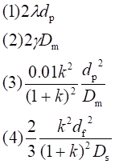
183. 1 分 (1891)
色谱速率理论中固定相传质阻力项系数的数学表达式为 ( )
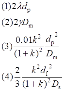
184. 1 分 (1892)
色谱速率理论中涡流扩散项系数的数学表达式为 ( )
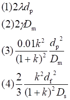
185. 1 分 (1893)
色谱速率理论中纵向分子扩散项系数的数学表达式为 ( )
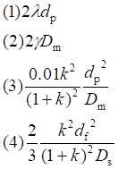
186. 1 分 (1894)
下列色谱保留参数中，与流动相流速无关的保留参数是 （ ）
（1）保留时间 （2）死时间 （3）保留体积 （4）保留距离
187. 1 分 (1895)
在气－固色谱分析中，首先流出色谱柱的组分的性质是 （ ）
（1）溶解能力小 （2）相对分子质量小
（3）吸附能力小 （4）沸点低
188. 1 分 (1896)
气－固色谱法，其分离原理是 （ ）
（1）吸附平衡 （2）分配平衡
（3）离子交换平衡 （4）渗透平衡
189. 1 分 (1897)
气－液色谱法，其分离原理是 （ ）
（1）吸附平衡 （2）分配平衡
（3）离子交换平衡 （4）渗透平衡
190. 2 分 (1898)
下列气相色谱仪的检测器中，属于浓度型检测器的是 （ ）
（1）热导池和电子捕获检测器
（2）火焰光度和氢焰离子化检测器
（3）热导池和氢焰离子化检测器
（4）火焰光度和电子捕获检测器
191. 2 分 (1899)
下列气相色谱仪的检测器中，属于质量型检测器的是 （ ）
（1）热导池和氢焰离子化检测器
（2）火焰光度和氢焰离子化检测器
（3）热导池和电子捕获检测器
（4）火焰光度和电子捕获检测器
192. 1 分 (1900)
下列气相色谱仪的检测器中，专门用于检测含硫、磷化合物气体的检测器是 （ ）
（1）热导池检测器 （2）氢焰离子化检测器
（3）电子捕获检测器 （4）火焰光度检测器
193. 1 分 (1901)
下列气相色谱仪的检测器中，适用于检测多卤、含电负性基团的有机物气体的检测器是 （ ）
（1）热导池检测器 （2）氢焰离子化检测器
（3）电子捕获检测器 （4）火焰光度检测器
194. 1 分 (1902)
下列气相色谱仪的检测器中，最适用于检测所有微量含碳有机物气体的检测器是 （ ）
（1）热导池检测器 （2）氢焰离子化检测器
（3）电子捕获检测器 （4）火焰光度检测器
195. 1 分 (1903)
使用热导池检测器时，为获得较高的灵敏度，常选用氢气作为载气，其主要的原因是 （ ）
（1）氢气容易获得
（2）氢气不与被测物反应
（3）氢气的热传导率（热导分数）大
（4）氢气的纯度高
196. 2 分 (1904)
当进样量、载气种类、固定相种类、柱温和检测器温度等都固定时，增大载气的平均流速，热导池检测器检出某组分的色谱流出曲线产生的变化为 （ ）
（1）ti减小，Ai减小 （2）ti减小，Ai增加
（3）ti增加，Ai减小 （4）ti增加，Ai增加
197. 1 分 (1905)
下列气相色谱仪的检测器中，能检测所有有机物与无机物气体的检测器是 （ ）
（1）热导池检测器 （2）氢焰离子化检测器
（3）电子捕获检测器 （4）火焰光度检测器
二、填空题 ( 共 105 题 )
1. 2 分 (1443)
分离非极性组分, 可选择非极性固定液, 则组分分子与固定液分子之间的作用力主要为
____________________________________________.
2. 2 分 (1444)
分离极性物质, 可选择极性固定液, 则组分分子与固定液分子之间的作用力为
_____________________________________________.
3. 2 分 (1490)
已知气相色谱柱进口压力为pi, 出口压力为p0, 压力校正因子
j=3 /2{[(pi/p0)3-1]/[(pi/p0)2-1]}, 此式的错误在 ( )
(1) 2/3写成3/2��
(2) (pi/p0)3应在分母
(3) p0/pi写成pi/p0
(4) 减1, 应该为加1
4. 2 分 (2029)
在气相色谱分析中，被测组分分子与固定液分子之间的作用力有 ___________ 、
____________ 、 ___________ 和 _________ 等四种。
5. 2 分 (2045)
指出下述情况下，色谱出峰次序的大致规律：
─────┬─────┬──────
混合物性质│固定液性质│出峰次序规律
─────┼─────┼──────
非极性 │ 非极性 │
强极性 │ 强极性 │
─────┴─────┴──────
6. 2 分 (2068)
色谱柱的柱长从 1.0m 增加到 2.0m ，其它操作条件均不变，则 1.0m 柱的分配比 (k') __________ 2.0m 柱的分配比。
7. 2 分 (2071)
用气相色谱法进行微量纯试剂制备时,常用 __________________ 检测器.
8. 2 分 (2078)
在用归一化法进行色谱定量分析时,进样量重现性差将不影响 _______________ .
9. 2 分 (2079)
理论塔板数反映了 ____________________ .
10. 2 分 (2092)
在使用热导池检测器时,一般用 ________________ 作为载气。
11. 2 分 (2097)
在色谱分析中,被分离组分与固定液分子性质越类似,其保留值 ______________ .
12. 2 分 (2098)
一般而言,在固定液选定后,载体颗粒越细,色谱柱效 __________________ .
13. 2 分 (2099)
衡量色谱柱的柱效能的指标是 _______________________ .
14. 2 分 (2100)
当载气线速越小,范氏方程中的分子扩散项越大,用 ______________ 作载气有利.
15. 2 分 (2110)
在气相色谱中,归一化定量方法计算组分的含量的公式是 ____________ .
16. 2 分 (2357)
所采用流动相的密度与液体接近, 粘度又与气体接近的色谱方法称________________。
17. 2 分 (2358)
在液相色谱中, 为了减少固定液的流失, 一般用___________________固定相。
18. 2 分 (2359)
在液相色谱中, 常用的一种通用型检测器是_________________。
19. 2 分 (2360)
在色谱分析中, 一般采用_________________来评价柱操作条件选择得好坏。
20. 2 分 (2361)
在液相色谱中, 流动相在使用之前, 必须进行_________________处理。
21. 2 分 (2362)
在液相色谱中, 除有机溶剂外, _________________也是常用的溶剂和流动相。
22. 2 分 (2363)
在液相色谱中, 常用作固定相, 又可用作键合固定相基体的物质是_____________。
23. 2 分 (2364)
按照固定相使用的方式, 色谱法可分为柱色谱和平板色谱, __________属于平板色谱。
24. 2 分 (2365)
在色谱法分析中, 一般采用__________来评价固定液选择得是否得当。
25. 2 分 (2366)
在液相色谱法中, 除色谱柱中发生谱带扩展降低柱效外, __________效应也是降低柱效, 使谱带扩展的一个重要因素。
26. 2 分 (2367)
在液相色谱中, 改变相对保留值是通过选择合适的___________________来实现的。
27. 2 分 (2368)
人们公认的色谱法创始人是______________国植物学家_____________。按两相状态分类, 他所创立的色谱法应称为________________色谱。
28. 2 分 (2369)
1941年由__________________建立了液-液色谱法, 因此荣获1952年诺贝尔化学奖。
29. 5 分 (2370)
1956年范德姆特提出______________理论方程。其方程简式表示为________________。
30. 2 分 (2371)
色谱法按分离原理分类, 可分为______________________、______________________、
____________________和_________________________。
31. 2 分 (2372)
色谱法按固定相的固定方式分类, 除柱色谱法以外, 还有____________________
和_________________________。
32. 2 分 (2373)
气相色谱中最常用载气有_____________、________________、__________________.
33. 2 分 (2374)
色谱法按两相状态可分为_____________(它包括________________和_____________)
及____________(它包括最常见的_____________和________________)。
34. 2 分 (2375)
气相色谱仪虽然它的形状、结构有多种多样, 但它的组成基本都包括_____________、
____________、_____________、________________和________________等五部分。
35. 2 分 (2376)
气相色谱仪气化室的作用是______________________________.
36. 2 分 (2377)
气化室温度的选择, 一般是要求在该温度下, 能使________________________。一般地讲是选在__________附近.
37. 2 分 (2378)
气相色谱仪的分离系统是_______________________。它是色谱仪的心脏, 目前常用的色谱柱有 ____________和______________两种。
38. 2 分 (2379)
气相色谱中对载体的要求是_______________、________________、_______________、和有一定的______________。
39. 2 分 (2380)
液相色谱中, 提高色谱柱柱效最有效的途径是____________________。
40. 2 分 (2381)
气相色谱的固定相大致可分为两类, 它们是________________________________和_________________。
41. 2 分 (2382)
气相色谱的检测器是一种将______________________转变成_______________________的装置。
42. 2 分 (2383)
气相色谱气化室的作用是将液体或固体试样瞬间气化而不分解。对其总的要求是_______________、________________和_____________________。
43. 2 分 (2384)
气相色谱柱装好后, 一般都需老化一定时间,其目的是_______________和___________。
44. 2 分 (2385)
采用硅藻土作为载体, 在涂渍固定液前应对载体进行预处理, 使其表面钝化。 常用的预处理方法有____________、_____________和_______________。
45. 2 分 (2386)
对复杂的试样，气相色谱分析常常需经四个步骤。它们是__________、__________、
____________、_______________。
46. 2 分 (2387)
在气相色谱分析中, 为了测定试样中微量的碳氢有机化合物, 可采用的检测器为____________________。
47. 2 分 (2388)
在气相色谱定量分析中, 对正态流出曲线峰面积的准确测量的公式为______________。
48. 2 分 (2389)
在气相色谱定量分析中, 若试样中所有组分在色谱柱中能全部分离且均可获得相应的色谱流出曲线, 并需测定每一组分, 则可采用的定量方法为_________________法。
49. 2 分 (2390)
在气相色谱分析中, 为了测定某组分在试样中的质量分数, 可采用_______________校正因子。
50. 2 分 (2391)
在气相色谱定量分析中, 对于同系物的半峰宽窄的峰面积测量可采用____________法。
51. 2 分 (2392)
在气相色谱分析中, 为了测定试样中微量有机硫化物, 可选择的检测器为__________。
52. 2 分 (2393)
在气相色谱分析中, 为了测定试样中微量水, 可选择的检测器为________________。
53. 2 分 (2394)
在气相色谱分析中, 为了测定某产品中的微量氯, 可选择的检测器为______________。
54. 5 分 (2395)
常用的质量型检测器有____________________________________________________。
55. 2 分 (2396)
在气相色谱分析中, 为测定物质在氢火焰离子化检测器上的相对定量校正因子, 应选择的标准物质为_____________。
56. 2 分 (2397)
在气相色谱分析中, 为测定物质在热导池检测器上的相对定量校正因子, 应选择的标准物质为_____________。
57. 2 分 (2398)
根据H＝A＋B／u＋Cu, 最佳流速下对应的最小塔板高度为_____________。
58. 2 分 (2399)
根据H＝A＋B／u＋Cu, 最佳流速为_____________。
59. 2 分 (2400)
测定矿泉水中Ｆ-、Ｉ-、ＮO3-和ＳO42-含量时, 一般用_______________色谱法。
60. 5 分 (2401)
柱温提高虽有利于提高柱效能, 但严重地使柱的__________________变差, 致使柱的____________下降。
61. 2 分 (2427)
气相色谱分析过程中, 同一试样第一次进样后色谱图上出现4个组分峰, 第二次进样后色谱图上变成5个组分峰。试问其主要原因可能是由于____________________所引起的。
62. 2 分 (2428)
如果试样组分比较复杂, 且色谱图上相邻两峰间距离太近或操作条件不易控制稳定, 那么要较准确测量保留值进行定性分析有一定困难, 可采用__________________________进行定性分析较为简便可靠。
63. 4 分 (2429)
在毛细管柱色谱中,依据范氏方程H＝A＋B／u＋Cu,最佳流速u＝________________。此时塔板高度达最小值即H(最小)＝__________________________。
64. 2 分 (2508)
离子交换色谱用来分离___________化合物或在溶液中_______________的化合物.
65. 2 分 (2509)
被分离组分与固定液分子的性质越类似, 它们之间的作用力越________________, 该组分的分配系数K就越________________________, 其保留时间也就越_____.
66. 2 分 (2510)
根据速率理论, 影响色谱柱柱效的因素主要有三项, 它们是__________________,
_______________________________和_____________________________.
67. 2 分 (2520)
利用保留指数法进行色谱定性分析, 其Ix的计算公式为
��.
68. 2 分 (2809)
键合相反相色谱是以_____________________为固定相,以________________为流动相。
69. 2 分 (2810)
在反相液相色谱的分离过程中, __________的组分先流出色谱柱, _____________的组 分后流出色谱柱。
70. 2 分 (2811)
液-液色谱法的反相液相色谱法, 其固定相的性质为____________, 流动相的性质为 ________________。
71. 2 分 (2812)
在正相液相色谱的分离过程中, _____________的组分先流出色谱柱, _____________ 的组分后流出色谱柱。
72. 2 分 (2813)
液-液正相液相色谱法, 其固定相的性质为___________, 流动相的性质为 ______。
73. 5 分 (2814)
高效液相色谱仪的安培检测器是根据
_____________________________________________________________原理检测色谱柱 后的流出组分的。
74. 2 分 (2815)
高效液相色谱仪的荧光检测器是_____________类型的检测器, 有机物产生荧光的电子 跃迁类型有:_________________和_________________。
75. 2 分 (2816)
能产生紫外吸收的电子跃迁类型有_____________,______________, ____________和 ___________。
76. 2 分 (2817)
超临界流体色谱法是以_______________为流动相的色谱法, 其流动相的性质是 _______________________________________。
77. 2 分 (2818)
空间排阻色谱分离高分子有机化合物是根据_______ ________________和 _________________________达到分离目的。
78. 2 分 (2819)
气相色谱定量分析中对归一化法要求的最主要的条件是_______________________
____________________________________________。
79. 2 分 (2820)
在一定的测量温度下,采用非极性固定液的气相色谱法分离有机化合物, _____________先流出色谱柱, _______________后流出色谱柱。
80. 2 分 (2821)
“ 沸点规律” 适用于________________类型化合物的色谱定性分析;沸点规律的数学 表达式为______________________________。
81. 2 分 (2822)
“ 碳数规律” 适用于________________类型化合物的色谱定性分析; 碳数规律的数学 表达式为______________________________。
82. 2 分 (2823)
在一定温度下, 采用非极性固定液，用气-液色谱分离同系物有机化合物, ____________ 先流出色谱柱, _________后流出色谱柱。
83. 2 分 (2824)
利用相对保留值( 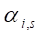
84. 1 分 (2825)
固定液相对极性P的测定方法中规定强极性的β,β＇- 氧二丙腈P=_____________, 非 极性的角鲨烷P=___________________。
85. 2 分 (2826)
气相色谱的炭质吸附剂通常用于分离______________和____________。
86. 2 分 (2827)
气相色谱固定相中的载体大至可分为______________和_______________两种类型。
87. 2 分 (2828)
气相色谱分析中, 固定液的选择一般可根据______________原则, 其主要的原因是 ____________________________________________。
88. 2 分 (2829)
气相色谱分析常用的吸附剂有_______________,____________,________________, ______________和________________五种。
89. 2 分 (2830)
色谱分析中, 分离能形成氢键的物质, 一般选用_____________ 固定液, 试样中各组分 按__________________分离, ________________的组分先流出色谱柱, ___________的组分后流出色谱柱。
90. 2 分 (2831)
色谱分析中, 对于强极性试样, 应首先选用________________固定液, 组分与分子间 的作用力为______________________。
91. 2 分 (2832)
气相色谱分析中, 分离极性物质, 一般选用______________固定液, 试样中各组分按 __________________分离, __________________的组分先流出色谱柱, ____________的组分后流出色谱柱。
92. 2 分 (2833)
色谱分析中, 对于中等极性的试样, 应首先选用____________固定液, 组分与分子间的 作用力为________________和___________________。
93. 2 分 (2834)
气相色谱分析中, 分离非极性物质, 一般选用_________________固定液, 试样中各组 分按________________分离, _____________的组分先流出色谱柱, ______________的 组分后流出色谱柱。
94. 2 分 (2835)
色谱分析中, 对于非极性试样的分离, 应首先选用_____________固定液 , 试样组分与 固定液分子之间的主要作用力为___________________。
95. 1 分 (2836)
气相色谱分析中常用的检测器有___________________________, _______________, _____________________,________________________和___________________。
96. 5 分 (2837)
试析影响气相色谱仪的热导池检测器的灵敏度的主要因素。
______________________________________________________________________ ______________________________________________________________________ ____________________________________________________________________。
97. 1 分 (2838)
气相色谱分析中, 当使用热导池检测器时, 测量死时间常用的物质是____________。
98. 1 分 (2839)
气相色谱分析中, 当使用氢焰离子化器时, 测量死时间常用的物质是____________。
99. 2 分 (2840)
为了减小涡流扩散和色谱峰展宽程度, 一般采用_____________________________， __________________________________等措施。
100. 5 分 (2841)
在气相色谱分析理论中, 纵向分子扩散使色谱峰展宽的数学表达式为_______________ 为了减小纵向分子扩散使色谱峰展宽程度, 一般应采用____________
为流动相, 适当增加___________和控制较低的____________等措施。
101. 2 分 (2842)
为了减小气相色谱固定相传质阻力使色谱峰展宽的程度, 一般采用______________含量的固定液, 以减小_____________的厚度。
102. 2 分 (4504)
在四臂热导池检测器中, 参比臂指________________________________________;测量臂指___________________________________________.
103. 2 分 (4505)
在某一气相色谱定量分析中, 为了测量定量校正因子, 某甲将内标物的浓度定为 4×10-4 mol・L-1, 其依据是___________________________________________.
104. 2 分 (4506)
在涂布固定液后的载体若再粉碎, 所产生的危害是___________________ ______
_____________________________________________.
105. 2 分 (4507)
在气相色谱分析实验中, 峰过大, 超过记录器量程, 若此时采用热导池检测器, 则应调节_________旋钮; 若采用氢火焰离子化检测器, 则可调节______和________旋钮.
三、计算题 ( 共 65题 )
1. 5 分 (3105)
在某一色谱分析中，采用 1m 长的柱子和 N2作载气。当载气线速为 40mm/s时，n1= 800；当载气线速为 10mm/s 时，n2= 1000。求最佳载气线速和所对应的H值，以及在载气最佳线速时所对应的理论塔板数是多少？(忽略涡流扩散)
2. 5 分 (3106)
设气相色谱的速率理论公式中三个参数分别为 A = 0.011cm，B = 0.32 cm2/s，C =0.045 s。试求: (1) 最佳载气线速度；
(2) 在最佳线速时色谱柱的最小塔板高度H 。
3. 5 分 (3107)
试推导气相色谱质量检测器的灵敏度公式，并指明其单位（只写结论，不作推导没有分）。
4. 5 分 (3108)
应用气相色谱法测定某混合试样中组分 i 的含量。称取 1.800g 混合样，加入 0.360g 内标物 S，混合均匀后进样。从色谱图上测得 Ai= 26.88 cm2，As= 25.00 cm2，已知 fi’= 0.930、f’s= 1.00，求组分 i 的质量分数。
5. 10 分 (3109)
甲认为从以下一组气相色谱数据中能求得某试样中 A 的质量分数，而乙则认为不能。你呢？若不能，请说明原因；若能，请计算出 A 的质量分数。
已知：将一定量的纯试样 B 加入试样后测得 A 对 B 的峰面积比为 0.82，试样对 B的质量比为 4.10。当 A 对 B 的质量比为 1.50 时，测得它们的峰面积比为 1.25。
6. 10 分 (3110)
在某一柱上分离一试样，得以下数据。组分 A 、B 及非滞留组分 C 的保留时间分别为 2.0 min、5.0 min和 1.0min。
问： (1) B 停留在固定相中的时间是 A 的几倍？
(2) B 的分配系数是 A 的几倍？
(3) 当柱长增加一倍，峰宽增加多少倍？
7. 10 分 (3111)
用一根 3m 长的色谱柱分离一对难分离物质，得如下流出曲线。为了得到 1.5的分离度，柱长最短为多少米？
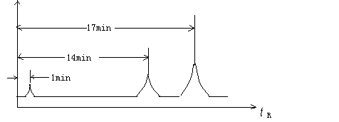
8. 10 分 (3112)
在一根 3 m长的色谱柱上分析某试样时，得如下色谱图及数据：
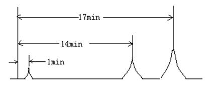
试计算： (1) 调整保留时间 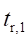 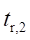
(2) 第二个峰的标准偏差
(3) 该色谱柱的有效塔板数 n��
(4) 两个组分的相对保留值 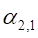
(5) 如果要使两组分的分离度 R = 1.5，需要有效塔板数为多少？此时应
使用多长的色谱柱？
9. 10 分 (3113)
一气相色谱柱的操作条件如下：
载气流速 FC (25℃) 40.0 mL/min
柱温 122℃
进口压力 pi 143988Pa
出口压力 p0 102658Pa
保留时间 t��(min) 空气 0.24 苯 1.41 甲苯 2.67
乙苯 4.18 异丙苯 5.34
固定液体积 Vs(122℃) 14.1 mL
试计算： (1) 每一种物质的校正保留体积 VR'；
(2) 每一种物质的分配系数 K；
(3) 每一对相邻组分的相对保留值a2,1；
(4) 如果这些组分都能完全分开，柱的有效理论塔板数至少是多少？
10. 5 分 (3114)
试计算某色谱柱的理论塔板数为 2500，组分 A 和 B 在该柱上的保留距离分别为 25mm 和 36mm，求 A 和 B 的峰底宽。
11. 10 分 (3115)
在某色谱分析中得到如下数据：
保留时间 t��= 5.0 min，死时间 t0= 1.0 min，固定液体积 Vs= 2.0 mL，柱出口载气体积流速 F = 50mL/min。试计算：
(1) 分配比 (k)
(2) 死体积 (V0)
(3) 分配系数 (K)
(4) 保留体积 (VR)
12. 10 分 (3116)
从 40cm 长的填充色谱柱上测得如下数据：
化合物 保留时间 /min 峰底宽度 /min
空气 2.5
A 10.7 1.3
B 11.6 1.4
(1) 求有效塔板数n的平均值；
(2) 求分离度 R，并根据求得的分离度计算B的n有效；
(3) 为了使 A、B 两个峰完全分开，需要的理论塔板数是多少？色谱柱至少该多长？
13. 10 分 (3117)
分析某农药生产过程中的中间体含量时，已知反应液中含有部分苯甲酸、三氯乙醛、农药中间体、部分水和杂质等，现称取 1.500g 试样，并加入 0.1050g 氯乙酸为内标，混匀后，吸取 2.0mL 进样，从分析结果和查表得如下数据：
苯甲酸 三氯乙醛 农药中间体 氯乙酸
峰面积 42.2 36.4 98.0 121.0
相对灵敏度 S ' 0.762 0.547 0.918 1.00
试求苯甲酸、三氯乙醛和农药中间体的质量分数。
14. 10 分 (3118)
组分 A 和 B 在一 1.8m 长色谱柱上的调整保留时间 t'R,A= 3min18s，t'R,B= 3min2s，两组分峰的半宽分别为 W1/2,A= 1.5mm 和 W1/2,B= 2.0mm，记录仪走纸速度为 600mm／h，试计算：
(1) 该柱的有效塔板高度H有效和相对保留值aA,B
(2) 如果要使A和B的分离度 R = 1.5，色谱柱至少须延长多少？
15. 10 分 (3123)
色谱分析中获得下面的数据：
保留时间 tR��= 5.4 min 死时间 t0= 3.1 min
载气平均流速 F = 0.313 mL/min 峰的基线宽度 Wb= 0.4 min
固定液体积为 0.16 mL
求：调整保留体积 VR'；分配系数 K；有效塔板数 n。
16. 10 分 (3124)
用一根 2m 长色谱柱将组分 A、B 分离，实验结果如下：
空气保留时间 30 s A 峰保留时间 230 s
B 峰保留时间 250 s B 峰底宽 25 s
求：色谱柱的理论塔板数n；A、B 各自的分配比；相对保留值αB,A；两峰的分离度R；若将两峰完全分离，柱长应该是多少？
17. 5 分 (3125)
根据下列实验结果求试样中各组分的质量分数，试样中只含下列四组分：
乙苯 对二甲苯 间二甲苯 邻二甲苯
色谱峰面积 120 75 140 105
相对重量校正因子 0.97 1.00 0.96 0.98
18. 5 分 (3339)
已知范德姆特方程中A＝0.10 cm, B＝0.16 cm2／s, C＝0.04 s, 问该柱子的载气最佳流速u(最佳)和相应塔板高度的最小值H(最小)各是多少?
19. 5 分 (3341)
已知R＝2（tR，2－tR，1）／（W1+W2）,设相邻两个峰的峰底宽度相等即W1＝W2 。求证:
R＝[（n2）1/2／4]×[(α－1)／α]×[k2／(1＋k2）]
20. 5 分 (3342)
用热导池为检测器的气相色谱法分析仅含乙醇、庚烷、苯和乙酸乙酯的混合试样。测得它们的峰面积分别为:5.00 cm2、9.00 cm2、4.00 cm2和7.00cm2, 它们的重量相对校正因子分别为:0.64、0.70、0.78和0.79。求它们各自质量分数。
21. 5 分 (3343)
热导池检测器灵敏度SC的测定。已知色谱柱长3m, 柱温90°C, 用高纯苯作为标准物,注入苯1.0mL(密度为0.88g/mL),记录纸走速20.0mm／min, 记录仪灵敏度为0.40mV／cm,信号衰减为64, 载气流速30.5mL／min, 苯峰面积为1.90cm2。 求SC值。(室温为20°C)
22. 10 分 (3344)
用一理论塔板数n为6400的柱子分离某混合物。从色谱图上测得组分A的tR，A为14min40s,组分B的tR，B为15min。求:
(1) 组分A、B的分离度RS。
(2) 假设保留时间不变,要使A、B两组分刚好完全分开,需要理论塔板数。
23. 5 分 (3345)
从色谱图测得组分1流出时间为16min30s, 组分2流出时间为26min, 空气流出时间为1min30s, 求:
(1) 组分2对组分1的相对保留时间
(2) 色谱柱对组分1的容量比
(3) 组分2的分子在固定相中停留时间
24. 5 分 (3346)
气相色谱法测定某混合物。柱长为1m, 从色谱图上测得:空气峰距离为5.0mm, 组分2距离为7.2cm, 峰底宽度为8.0mm.求该色谱柱对组分2的理论塔板数n,塔板高度H及标准偏差s各是多少?
25. 5 分 (3347)
气相色谱固定相为邻苯二甲酸二异癸酯, 当柱温为100℃, 从色谱图上已知丁酮与相邻的正己烷和正庚烷的调整保留距离分别为114.5mm, 61.0mm, 137.0mm, 求丁酮的保留指数I值。
26. 10 分 (3348)
测定二甲苯氧化母液中乙苯、对二甲苯、间二甲苯和邻二甲苯的质量分数, 称取试样1.5000g,加入0.1500g 正壬烷作为内标物, 混匀后进样, 测得数据为:
组分 正壬烷 乙苯 对二甲苯 间二甲苯 邻二甲苯
峰面积A/mm2 98.0 70.0 95.0 120.0 80.0
校正因子fi’ 1.02 0.97 1.00 0.96 0.98
27. 5 分 (3349)
气相色谱实验测得: 色谱柱入口压力pi保持5×101325Pa, 出口压力p0为101325Pa,那么在柱子中的平均压力应是多大?
28. 10 分 (3350)
色谱分析表明, 某试样中乙酸甲酯、丙酸甲酯和正丁酸甲酯的保留时间分别为2.12min, 4.32min, 8.63min; 测得峰面积分别为18.1、43.6和29.9; 检测器对乙酸甲酯、丙酸、甲酯和正丁酸甲酯的相对校正因子分别为0.60、0.78和0.88。
(1)计算每种组分的质量分数
(2)根据碳数规律, 预测正己酸甲酯的保留时间
29. 10 分 (3351)
组分A 在三根色谱柱上获得了下面的数据:
固定相 死时间(min) 保留时间(min)
1. 5％DNP 1.0 4.0
2.10％DNP 1.0 7.0
1.20％DNP 1.0 13
通过计算说明组分A 在三根柱上的N(理)和N(有效)之比的规律性。
30. 10 分 (3352)
某填充色谱柱, 塔板高度为0.2mm, 相比b=90, 试问对已知组分A 和B 的分配系数分别为9.8和10.1的混合物, 能否达到基线分离(R=1.5)?
31. 10 分 (3353)
组分A 和B 的分配系数之比为0.909, 若使两者达到基线分离(R=1.5 ),当有效理论塔板高度为0.8mm时, 色谱柱至少该多长?
32. 10 分 (3354)
有一根气-液色谱柱, 长2m, 当载气流速为15mL/min时, 理论塔板数n=2450, 而在载气流速为40mL/min时, 理论塔板数n=2200, 若忽略涡流扩散, 试计算:
(1) 最佳流速为多少?
(2) 在最佳流速时色谱柱的理论塔板数为多少?
33. 10 分 (3355)
有一2m长气-液色谱柱, 用氦气作载气, 以三种不同的载气流速进行测试, 得如下结果
甲烷 正十八烷
t0/s tR/s�� Wb/s
18.2 2020 223
8.0 888 99
5.0 558 68
(1)分别求三次载气的线速度(cm/s)；
(2)分别求三次载气流速时的n(理)和H(理)；
(3)利用H＝A+B／u+Cu, 求A、B、C；
(4)载气的最佳流速是多少(cm/s)?
34. 5 分 (3356)
有一试样含甲酸、乙酸、丙酸及不少水、苯等物质, 称取此试样1.055g, 以环己酮作内标,称取0.1907g环己酮, 加到试样中, 混合均匀后, 吸取此试液3μL进样, 得到色谱图。从色谱图上测得的各组分峰面积及已知的s’值如下:
甲酸 乙酸 环己酮 丙酸
峰面积(mm2) 14.8 72.6 133 42.4
相对响应值S’ 0.261 0.562 1.00 0.938
求: 甲酸、乙酸、丙酸的质量分数。
35. 10 分 (3357)
已知记录仪灵敏度为0.658mV/cm, 记录纸速为2cm/min, 载气流速为60mL/min, 进样量为0.011mg苯, 得到的色谱峰的实测面积为173cm2, 半峰宽为0.6cm, 检测器噪声为0.1mV,求此氢火焰离子化检测器的灵敏度, 检测限和最小检测量。
36. 10 分 (3358)
测得石油裂解气色谱图(前四个组分衰减1／4), 经测定各组分的fi’值及从色谱流出曲线量出各组分峰面积分别为:
组分 空气 甲烷 二氧化碳 乙烯 乙烷 丙烯 丙烷
峰面积(mm2) 34 214 4.5 278 77 250 47.3
校正因子(f') 0.84 0.74 1.00 1.00 1.05 1.28 1.36
用归一化法定量, 求各组分的质量分数为多少?
37. 10 分 (3359)
测定氯苯中的微量杂质苯, 以甲苯为内标, 先用纯物质配制标准溶液, 进行气相色谱分析, 得如下数据:
编号 甲苯质量/g 苯的质量/g h(苯)／h(甲苯)
1 0.0455 0.0056 0.234
2 0.0460 0.0104 0.424
3 0.0407 0.0134 0.268
4 0.0413 0.0207 0.838
在分析未知苯时, 称取氯苯试样5.119g, 加入内标物0.0421g, 测得色谱图, 从图上查出
h(苯)／h(甲苯) 为0.341, 求试样中杂质苯的质量分数。
38. 10 分 (3380)
已知某色谱柱的有效塔板数为1600, 组分A和B在该柱上的调整保留时间分别为 90s和100s, 求分离度.
39. 5 分 (3381)
在某一色谱分析条件下, 把含A和B以及相邻的两种正构烷烃(相差一个碳数)的混合物注入色谱柱分析. A在相邻的两种正构烷烃之间流出, 它们的调整保留时间分别为 10.0 min、11.0 min和12.0min, 最先流出的正构烷烃的保留指数为800, 而组分B的保留指数为 882.3, 求A组分的保留指数. 试问A和B有可能是同系物吗?
已知组分A和B的分配系数之比为0.909,柱长为3.48mm,设有效塔板高度为0.8mm,求两者分离度。
40. 5 分 (3624)
已知：fi’、fs’、Ai、As分别为待测组分（i）和内标物质（s）的相对质量校正因子和色谱峰面积，ms、m分别为内标物的质量和待测试样的质量，请推导出计算i组分质量分数的色谱定量分析内标法公式。
41. 5 分 (3625)
在某柱上（柱温150℃），正丙酸的VR’=737.9mL,正己酸的VR’＝ 3758mL，柱温下柱 出口的体积流量FC=70.0mL/min，一含酸试样中某组分的VX1’为2183mL，另一组分VX2’ 为1663mL，试计算说明此二个组分是否属于正构酸？
42. 10 分 (3626)
在DOS＋SA柱上（柱温150℃），乙酸的tR=6.62min，正戊酸的tR=31.69min，空气的tR=0.50min，有一含稀酸试样的某组分的tR=18.61min，柱温下柱出口的体积流量FC=70.0mL/min ，试计算说明：此组分可能是什么酸？
43. 10 分 (3627)
在气相色谱柱上组分X的tR=5.34min，空气的tR=0.12min，室温(Tr)27℃下用皂膜流量计 测得体积流量F=29.5mL/min，固定液质量ws=0.957g，柱温Tc=125℃，柱前压力 P’=1.50×105Pa，大气压P0=1.01×105Pa，27℃时，水的饱和蒸气压Pw=0.356×104Pa，试计算组分X的比保留体积（Vg）。
44. 10 分 (3628)
在气相色谱柱上，组分A的tR=1.50min，空气的tR=0.15min，固定液的重量ws=0.950g， 密度ρ=0.910g/mL（柱温为100℃时），载气柱后的平均体积流量 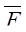
试计算：
（1）组分A的比保留体积（Vg）；
（2）组分A的分配系数（K）。
45. 5 分 (3629)
在固定的色谱分析条件下，检测nC10、nC11和nC12混合物，已知：t’R,nC10=10.0min、 t’R,nC12=14.0min，试计算t’R,nC11。（nCx表示不同碳数的正构烷烃）
46. 5 分 (3630)
在邻苯二甲酸二壬酯色谱柱上（柱温为100℃）得到三种物质的调整保留时间为：苯1.75min、正庚烷1.65min、正辛烷2.00min，请计算苯的保留指数Ix。
47. 5 分 (3631)
在阿皮松L色谱柱上（柱温为100℃）得到三种物质的调整保留值为：乙酸正丁酯 310.0mm、正庚烷174.0mm、正辛烷373.4mm，请计算乙酸正丁酯的保留指数Ix。
48. 5 分 (3632)
取0.50mL含 0.050%苯的二硫化碳溶液进样，测得色谱峰的峰高(h)为5.00cm 和半峰 宽(w1/2)为0.25cm。已知记录仪的灵敏度(u2)为0.40mV/cm、走纸速度(u1)为0.50cm/min， 苯的密度(ρ)为0.88g/cm3。噪声(RN)为0.020mV和衰减档为1/32，计算该氢焰离子化检测器的灵敏度(St)和检测限(Dc)。
49. 10 分 (3633)
物质A和B在长2m的柱上分离后，A的保留时间为16.40min ，B的保留时间为 17.63min，空气峰保留时间为1.30min，A的峰底宽为1.2min，B的峰底宽为1.40min。已知： 记录仪的灵敏度为 0.40mV/cm。记录仪的走纸速度为0.50cm/min，试计算：
（1）分离度(R)；
（2）容量因子：kA、kB；
（3）相对保留值rB,A；
（4）要使A、B两组分的色谱峰完全分离（R=1.5)，柱长需增加多少米？
50. 10 分 (3634)
配气瓶体积5080mL，向瓶内注入体积分数为99.2%的乙烯1.00mL，然后使瓶内压力比大气压高51332Pa。待均匀后，取瓶内气样5.00mL，注入100mL氮气内，混匀，再从中取1.00mL注入色谱仪，测得乙烯峰平均峰高15.2cm。再注入同体积试样气至色谱仪中，测得乙烯平均峰高13.8cm。气相色谱仪噪声0.004mV，记录器量程1mV，满量程为25cm。配气及分析时的大气压为100797.5Pa。室 温视作恒定。求试样气中乙烯浓度，以及色谱体系中的最小检知浓度。
51. 10 分 (3635)
实验时，配制苯（标准）与A、B、C和D纯样的混合溶液，加入质量分别为0.435、0.653、0.864、0.864、1.760g。取以上溶液0.2mL进样分析。测得色谱峰面积分别为4.00、6.50、7.60、8.10、15.0单位。再取含A、B、C、D四组分的待测试样0.5 mL进行分析，测得A、B、C、D的色谱峰面积分别为3.50、4.50、4.00、2.00单位，已知A、B、C、D的相对分子质量分别为32.0、60.0、74.0、88.0。
求A、B、C、D的质量分数。
52. 10 分 (3636)
分别称取试样0.1349g，内标物（癸二酸）0.1042g，同溶于乙醚中，用重氮甲烷进行甲酯化反应，转变成相应的甲基酯后，进行气相色谱分析。测得间苯二甲酸二甲酯的峰面积为2.56单位；癸二酸二甲酯的峰面积为21.3单位。这两种酯的质量校正因子分别为 0.77和 1.00。试样含间苯二甲酸和对苯二甲酸及其它杂质。求间苯二甲酸的质量分数，并回答重氮甲烷化的目的。
53. 5 分 (3637)
有时分析烃类混合物，先将各组分氧化成CO2后再检测，所生成的水气用冷肼除去。现用此测得5个组分的峰面积如下：
正戊烷2.00单位，正己烷5.72单位，3－甲基己烷2.21单位，2,2,4－三甲基戊烷1.92单位，甲苯3.16单位。请计算试样中各组分的摩尔分数。
54. 10 分 (3638)
用气相色谱法分离一系列饱和醛。现测得以下数据：
组分： 空气 C6 C9 Cx Cy Cz
保留值 ： 1.00 14.25 33.75 46.00 11.10 25.30
请通过计算回答Cx、Cy、Cz为何种醛 ？
55. 5 分 (3639)
配制一农药的丙酮溶液，质量分数为1.00×10－6g/g。气相色谱仪“衰减档”置于1/2。取一定体积该试样注入色谱柱，并测得峰高为200.0mm。在无衰减下，测得仪器噪声为1.0mm。试求最小检知浓度。
56. 10 分 (3640)
将相同浓度、相同体积的组分A，分别注入甲、乙两台色谱仪。检测器均为火焰离子化检测器。甲检测器是乙检测器灵敏度的两倍，前者的噪 声是后者的一半。现测得组分A在甲色谱仪上的半宽度为0.66min ，在乙上的半宽度为0.33min，求组分A在甲色谱仪上的最小检知浓度是在乙色谱仪上的几倍？
57. 10 分 (3641)
戊烷的保留时间为4.5min，空气峰保留时间为30s，用皂膜流量计测得柱后流量为58.5mL/min，柱温为100℃，室温为23℃。柱前压力表显示压力为0.101MPa，大气压为1.01×105Pa。柱内固定液重4.2g，其密度（100℃）为0.95g/mL。 23℃时的饱和水蒸气压力为 2808.8Pa。求戊烷的分配系数及比保留体积。
58. 5 分 (3642)
当柱长增加一倍，色谱峰的方差增加几倍？（设除柱长外，其他条件不变）
59. 10 分 (3643)
已知组分A和B的分配系数之比为0.909 ,若使两者达到基线分离，柱长应为多少？设有效塔板高度为0.8mm。
60. 10 分 (3644)
在一色谱柱上分离A和B，其保留时间分别为14.6 min和14.8min，该柱柱效对A、B来说都视作4100块理论塔板，问在此柱上A、B的分离度为多少？假定二者的保留时间仍保持不变，而分离度要求达到1.0（按峰的基线宽度计算）则需要多少理论塔板数？
61. 10 分 (3645)
在一色谱柱上，A、B两组分的比保留体积分别为14.2 mL/g和12.9mL/g，且能达到基线分离。柱温为100℃，柱死体积为9.80mL，固定液重1.40g，求柱的理论塔板数。并指明此塔板数对谁而言。
62. 5 分 (3646)
在某一实验条件下，测得组分A的保留时间为1min20s，并量得该色谱峰的标准偏差为2.0s。已知柱长为1m。求该柱的理论塔板高度为多少？
63. 5 分 (3647)
已知柱长相等的两色谱柱，其速率方程式的常数为：
A(cm) B(cm2/s) C(s)
柱Ⅰ 0.18 0.40 0.245
柱Ⅱ 0.05 0.50 0.10
求（1）柱Ⅱ的柱效率是柱Ⅰ的几倍？
（2）柱Ⅱ的最佳线速是柱Ⅰ的几倍？
64. 2 分 (2506)
在气相色谱中, 载气流速不仅影响分析速度也影响柱效. 为了达到最高柱效能,载气流速要控制在最佳状态. 实验证明H2、He的最佳流速 N2. 所以柱效相同时, 要获得高流速最好用 气,而从安全考虑宁可选用 气, 但从经济上考虑则选用 气.
65. 2 分 (2507)
温度是气相色谱的重要操作参数之一,它直接影响色谱柱的____________和_________以及检测器的_________________。
四、问答题 ( 共89 题 )
1. 10 分 (4059)
在气相色谱中，某人采用了粒度比原有柱更细的载体，而其它一切条件均不变。问：
(1) H - u 关系曲线的形状和位置与原来的相比有无变更？
(2) 若有变更，作何变更？（画图并扼要说明原因）
2. 5 分 (4060)
在一根色谱柱上，欲将含 A、B、C、D、E 五个组分的混合试样分离。查得各组分的分配系数大小如: KB> KA> KC> KD,KE=KA,试定性地画出它们的色谱流出曲线图，并说明其理由？
3. 5 分 (4061)
为了检验气相色谱仪的整个流路是否漏气，比较简单而快速的方法是什么？
4. 5 分 (4062)
如果采用热导池检测器作为气相色谱分析时的检测器，为了提高检测灵敏度，最有效的方法是什么？
5. 5 分 (4069)
试指出用邻苯二甲酸二壬酯为固定液分离苯、甲苯、环己烷和正己烷混合物时，
它们的流出顺序怎样？为什么？
6. 5 分 (4070)
在采用低固定液含量柱, 高载气线速下进行快速色谱分析时, 选用哪一种气体作载气，可以改善气相传质阻力？为什么？
7. 5 分 (4071)
在液相色谱中，色谱柱能在室温下工作，不需恒温的原因是什么？
8. 5 分 (4072)
在液相色谱中，范氏方程中哪一项对柱效能的影响可以忽略不计？为什么？
9. 5 分 (4073)
简述在气相色谱操作中采用高流动相速度对柱效能的利弊？正确的操作应怎么办？
10. 5 分 (4074)
根据范氏方程，试简要分析要实现色谱快速分析应注意哪些操作条件？
11. 5 分 (4075)
试预测下列操作对色谱峰形的影响, 并简要说明原因。
(1) 进样时间超过 10 s
(2) 气化温度太低，以致试样不能瞬间气化
(3) 加大载气流速很多
(4) 柱长增加一倍
12. 5 分 (4142)
在实验中发现某色谱柱对组分 A 和 B 有很高的理论塔板数，因而推断 A 和 B在该柱上能得到很好的分离，对吗？并简要说明原因。
13. 5 分 (4317)
什么叫气-固色谱法? 其分离原理是什么?举例说明适用于哪些试样?
14. 5 分 (4318)
什么叫气-液色谱法? 其分离原理是什么?举例说明适用于哪些试样?
15. 5 分 (4319)
色谱流出曲线的保留值是由色谱过程的什么因素决定的? 它有什么用途?
16. 2 分 (4321)
色谱流出曲线的宽度是由色谱过程的什么因素决定的? 为什么流出曲线越窄越好?
17. 2 分 (4322)
归一化法定量的先决条件是什么?
18. 5 分 (4323)
对固定液有何要求?
19. 5 分 (4324)
在色谱法中为什么把分离度称为色谱柱总分离效能指标?
20. 5 分 (4325)
只要色谱柱的均匀性在实验过程中不变, 不同流动相通过色谱柱时, 在出口的线速度都一样(假定柱入口压力不变), 这种说法对吗? 为什么?
21. 5 分 (4326)
实验测得气相色谱柱出口的线速度为u,柱长和组分的保留时间分别为L和t, 然后代入公式t�矗剑�L／u）(1＋k')求得分配比k', 这种计算分配比方法正确吗?为什么?
22. 5 分 (4327)
根据分离机制的不同, 指出液相色谱法的类型。并简要说明其分离机制。
23. 5 分 (4328)
试预测下列实验条件对色谱峰宽的影响, 并简要说明原因.
(1) 柱温增加；
(2) 相比减小；
(3) 分配比增加；
(4) 试样量减小很多。
24. 5 分 (4329)
在液相色谱中, 为什么对所用的流动相进行脱气处理?
25. 5 分 (4330)
当组分的进样量一定时, 用质量型检测器测得的峰面积和浓度型检测器测得的峰面积与载气流量的关系有何不同?
26. 5 分 (4331)
甲柱的固定液含量高于乙柱, 当其它条件相同时,二者的最佳线速相同吗?
27. 5 分 (4332)
在GC法中的程序升温指的是什么?它有何特点?
28. 5 分 (4333)
在HPLC法中, 对流动相有哪些基本要求?
29. 5 分 (4334)
要准确地利用气相色谱法进行组分的定量分析, 应解决哪些问题?
30. 5 分 (4335)
气相色谱定性分析的方法有哪几种?
31. 5 分 (4336)
从色谱峰流出曲线可说明什么问题?
32. 5 分 (4337)
色谱峰的区域宽度是组分在柱中谱带扩张程度的函数, 它反映了操作条件的动力学因素。那么, 衡量区域宽度方法有哪几种?
33. 5 分 (4338)
简述气相色谱法分离原理。
34. 5 分 (4339)
固定液是什么? 气相色谱中对它有什么要求?
35. 5 分 (4340)
应用气相色谱法分离A、B两组分, 为了使这两组分能完全分得开, 应满足哪些条件?为什么?
36. 5 分 (4341)
气相色谱法进行定量分析时, 引起误差的因素主要有哪些?
37. 5 分 (4342)
简要地说明气-固色谱法的色谱峰产生拖尾的原因和消除方法。
38. 5 分 (4143)
有一经验式为 C3H6O 的液体，其红外光谱图如下，试分析可能是哪种结构的化合物。
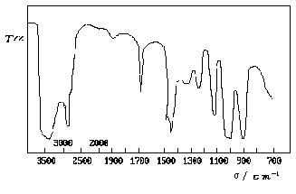
39. 5 分 (4144)
原子吸收分光光度计和紫外可见分子吸收分光光度计在仪器装置上有哪些异同点?
为什么?
40. 5 分 (4145)
原子吸收的背景有哪几种方法可以校正。
41. 5 分 (4146)
原子吸收是如何进行测量的？为什么要使用锐线光源？
42. 5 分 (4421)
分离下列物质, 宜用何种液相色谱方法?为什么?
(1) Ba2+和Sr2+； (2) C4H9COOH和C6H13COOH
43. 5 分 (4422)
醋酸甲酯, 丙酸甲酯, 正丁酸甲酯在邻苯二甲酸二癸酯上的保留时间分别为2.12, 4.32, 8.63min, 试指出它们在阿皮松上分离时, 保留时间是增长还是缩短? 为什么?
44. 5 分 (4423)
在硅胶柱上, 用甲苯为流动相时, 某溶质的保留时间为28min. 若改用四氯化碳或三氯甲烷为流动相, 试指出哪一种溶剂能减小该溶质的保留时间? 为什么?
45. 5 分 (4424)
指出下列物质在正相液相色谱中的洗脱顺序:
(1) 正己烷, 正己醇, 苯
(2) 乙酸乙酯, 乙醚, 硝基丁烷
46. 5 分 (4425)
指出下列化合物在反相液相色谱中的洗脱顺序:
(1) 正己烷, 正己醇, 苯
(2) 乙酸乙酯, 乙醚, 硝基丁烷
47. 5 分 (4500)
在气相色谱法中, 死时间(t0)怎样才能测得?
48. 5 分 (4501)
在气相色谱法中, 流动相的线速度(u)怎样测得? 此线速度要不要再经过压力校正, 求得正确的平均线速度?
49. 5 分 (4502)
怎样判断氢火焰离子化检测器的氢火焰已点燃?
50. 5 分 (4503)
试述气相色谱仪中基始电流的来源及"基始电流补偿"旋钮的作用.
51. 5 分 (4718)
什么叫离子交换色谱法?
52. 5 分 (4719)
什么叫离子对色谱法?
53. 5 分 (4720)
液-液色谱法中, 什么叫反相液相色谱法?主要用于分析什么性质试样?
54. 5 分 (4721)
液-液色谱法中, 什么叫正相液相色谱法?主要用于分析什么性质试样?
55. 5 分 (4722)
简述气相色谱分析对载体的基本要求, 并解释之。
56. 5 分 (4723)
载体为什么要处理?常用哪些处理方法?
57. 5 分 (4724)
什么是色谱的键合固定相?它与机械涂布的固定液有什么不同?
58. 5 分 (4725)
试析火焰光度检测器检测的原理。
59. 5 分 (4726)
试析氢火焰离子化检测器检测的原理。
60. 5 分 (4727)
试析电子捕获检测器检测的原理。
61. 5 分 (4728)
试析气相色谱仪热导池检测器的检测原理。
62. 5 分 (4729)
请写出气相色谱仪常用的五种检测器的名称及检测的对象。
63. 5 分 (4730)
什么叫气相色谱的动力学过程的冲洗法（洗脱法）？它应用于哪些分离过程？
64. 5 分 (4731)
什么叫色谱法？
65. 5 分 (4732)
为了减小流动相传质阻力， 应采取什么措施？为什么？
66. 10 分 (4733)
根据液－液色谱法容量因子和保留值的定义， 请推导容量因子k与保留值tR的关系式 （推导过程请指出各参数的物理意义）。
67. 5 分 (4734)
从理论上分析， 高效液相色谱是如何实现高效和高速分离的。
68. 5 分 (4735)
在高效液相色谱中，为什么要对流动相脱气？
69. 5 分 (4736)
已知以下一些溶剂的性质：
溶 剂 ：正己烷 苯 氯仿 水 甲醇 丙醇 甲苯
(UV)截止波长/nm：195 280 245 195 205 330 285
(nm)
若采用低压汞灯作紫外吸收检测器的光源，其工作波长为254nm，问有哪几种可以作 为流动相，其中又以何者为最好？为什么？在反相色谱中又应该选哪几种？
70. 5 分 (4737)
试简述采用反相高效液相色谱的主要优点。
71. 5 分 (4738)
现分离一含A和B的试样， 键合相有十八硅烷基硅胶和氰基硅胶可供选择；流动相有 25％甲醇－水和20％四氢呋喃－己烷可供选择。为了测定B中微量A，应选何种固定 液和流动相？说明如此选择的原因，并解释出峰的次序。A和B 的结构式为
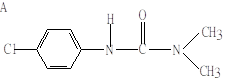
B
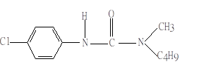
72. 5 分 (4739)
现分离一含A和B的试样，键合相有十八硅烷基硅胶和氰基硅胶可供选择，流动相有 60％甲醇－水和1％二氧杂环己烷－己烷可供选择。（1）若采用正相色谱法，应选用何种固定相和流动相？出峰次序如何？（2）若采用反相色谱法，应选用何种固定相和流动相？出峰次序有否变化？（3）何谓正相色谱和反相色谱？
B 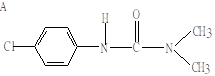
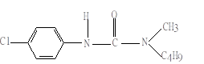
73. 10 分 (4740)
根据液－液色谱法分配系数和保留值的定义， 请推导出分配系数(K)与保留值(tR)的关系式（推导过程，请指出各参数和物理意义）。
74. 10 分 (4741)
有时为了分析烃类混合物，先将各组分都氧化成CO2后再进行检测，所生成的水用冷 阱除去。这种预氧化法的主要优缺点是什么？氧化步骤应在色谱柱前还是在色谱柱后进 行？为什么？应采用何种检测器和何种固定相？
75. 5 分 (4742)
请证明下列等式：
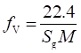
76. 5 分 (4743)
用一色谱柱分析A、B、C、D、E五个组分。用热导池检测器，以N2作载气。已知五组分的分配系数和热导系数大小的次序为：
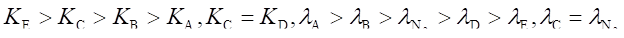
77. 5 分 (4744)
用一气－液色谱柱分离A、B、C、D、和E五个组分，其保留值分别如下：
2min30s，5min2s，6min53s，8min ，9min50s ，空气峰保留值则为45s 。在使用 相同固定液和相同柱温的另一柱上，测得空气的保留值为1min20s ，B则为 6min38s ，另一组分为10min19s。问另一组分是E吗？为什么？
78. 5 分 (4745)
以聚乙二醇－400为固定液，对丁二烯原料进行气相色谱分析。已知原料中含水、甲醇、 乙醛、乙醚、乙醇、1-丙醇，预测它们的出峰次序。已知它们的沸点分别为100 OC、65 OC、 20.8 OC、46 OC、78.5 OC、97.4OC。
79. 5 分 (4746)
有两根色谱柱，固定液配比分别为20％和5％，其他条件均相同，请分析高配比柱的 优缺点。
80. 5 分 (4747)
有两根色谱柱，固定液配比分别为20％和3％，其他条件均相同，请分析低配比柱的 优缺点。
81. 5 分 (4748)
当其他条件相同时，分别用N2和H2作载气时，H－u 图有何变更？为什么？（可以 作图后解释，也可以用文字说清楚）
82. 10 分 (4749)
色谱分析中的柱外效应指什么？如何抑制柱外效应？
83. 5 分 (4750)
试述离子色谱法的固定相、流动相的组成、分离原理和检测器的性质，以及采用抑制柱 的目的？
84. 5 分 (4751)
什么是柱外效应？在色谱中造成柱外效应的主要因素有哪些？
85. 5 分 (4752)
在塔板理论中，把气-液色谱柱比作精馏塔模式，试问气-液色谱与精馏有否差别？若有， 差别又在哪里？
86. 5 分 (4753)
组分在色谱柱内的移动速率由哪些实验因素决定？为什么？
87. 5 分 (4754)
试述示差折光率检测器的检测原理。
88. 2 分 (4755)
测定科瓦茨(Kovats)保留指数时，采用的标准物质是什么？对被测与标准物质的保留值 的大小要求是什么？
89. 5 分 (4756)
试析一个优良气相色谱检测器应具备的条件。